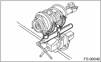
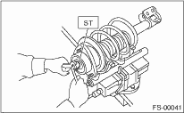

FRONT SUSPENSION > Front Strut
1. Using a coil spring compressor, compress the coil spring.

2. Using the ST, remove the self-locking nut.
| ST 927760000 | STRUT MOUNT SOCKET |

3. Remove the strut mount, upper spring seat and rubber seat from the strut.
4. Gradually decrease the compression force of compressor, and remove the coil spring.
5. Remove the dust cover and helper spring.